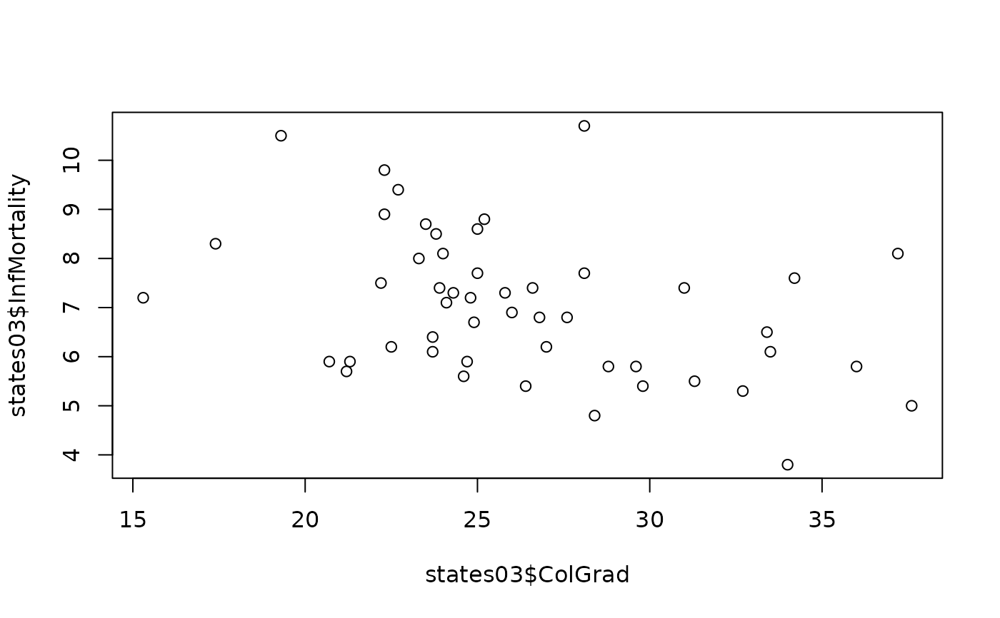
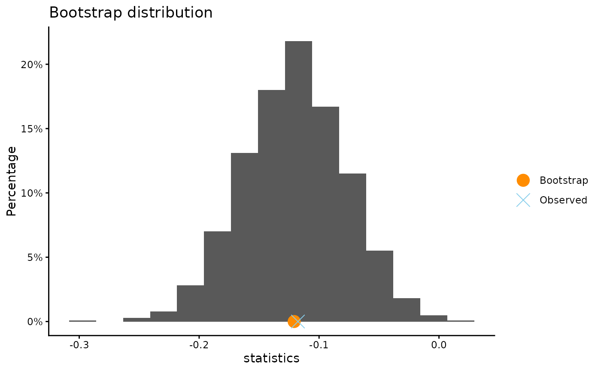
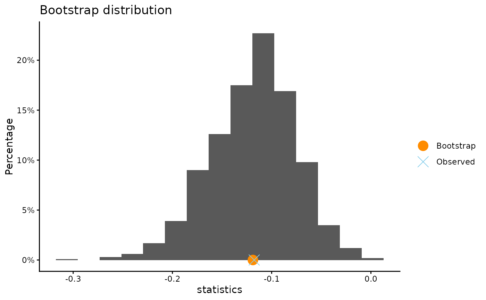

Bootstrap the slope of a simple linear regression line
Source:R/bootSlope.R, R/bootSlope.default.R, R/bootSlope.formula.R
bootSlope.RdBootstrap theslope of a simple linear regression line. The bootstrap mean and standard error are printed as well as a bootstrap percentile confidence interval.
Usage
bootSlope(x, ...)
# Default S3 method
bootSlope(
x,
y,
conf.level = 0.95,
B = 10000,
plot.hist = TRUE,
xlab = NULL,
ylab = NULL,
title = NULL,
plot.qq = FALSE,
x.name = deparse(substitute(x)),
y.name = deparse(substitute(y)),
seed = NULL,
...
)
# S3 method for class 'formula'
bootSlope(formula, data, subset, ...)Arguments
- x
a numeric vector.
- ...
further arguments to be passed to or from methods.
- y
a numeric vector.
- conf.level
confidence level for the bootstrap percentile interval.
- B
number of times to resample (positive integer greater than 2).
- plot.hist
a logical value. If
TRUE, plot the bootstrap distribution of the resampled slope.- xlab
an optional character string for the x-axis label
- ylab
an optional character string for the y-axis label
- title
an optional character string giving the plot title
- plot.qq
a logical value. If
TRUEa normal quantile-quantile plot of the bootstraped values is created.- x.name
Label for variable x
- y.name
Label for variable y
- seed
optional argument to
set.seed- formula
a formula of the form lhs ~ rhs where lhs is a numeric variable giving the data values and rhs a factor with two levels giving the corresponding groups.
- data
an optional data frame containing the variables in the formula formula. By default the variables are taken from environment(formula).
- subset
an optional vector specifying a subset of observations to be used.
Methods (by class)
bootSlope(default): Bootstrap the slope of a simple linear regression linebootSlope(formula): Bootstrap the slope of a simple linear regression line
References
Tim Hesterberg's website https://www.timhesterberg.net/bootstrap-and-resampling
Examples
plot(states03$ColGrad, states03$InfMortality)

bootSlope(InfMortality ~ ColGrad, data = states03, B = 1000)
#>
#> ** Bootstrap interval of slope
#>
#> Observed slope between ColGrad and InfMortality : -0.1176
#> Mean of bootstrap distribution: -0.12076
#> Standard error of bootstrap distribution: 0.04303
#>
#> Bootstrap percentile interval
#> 2.5% 97.5%
#> -0.20487631 -0.03895761
#>
#> *--------------*

bootSlope(states03$ColGrad, states03$InfMortality, B = 1000)
#>
#> ** Bootstrap interval of slope
#>
#> Observed slope between states03$ColGrad and states03$InfMortality : -0.1176
#> Mean of bootstrap distribution: -0.11891
#> Standard error of bootstrap distribution: 0.04277
#>
#> Bootstrap percentile interval
#> 2.5% 97.5%
#> -0.20931101 -0.04111772
#>
#> *--------------*
